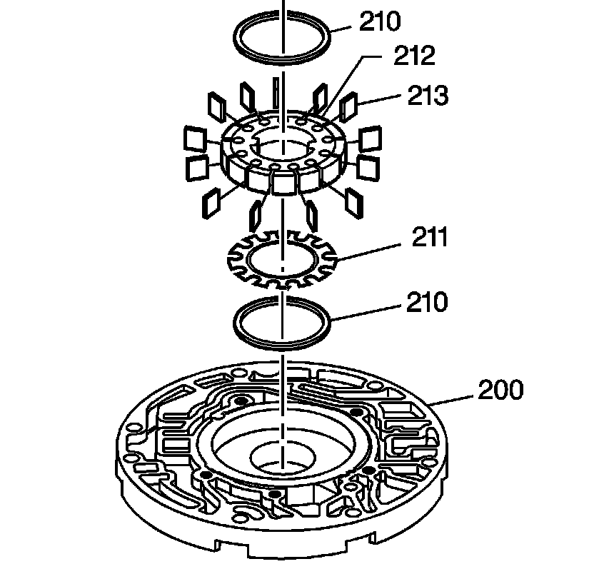

Oil Pump Body Disassemble
Oil Pump Body Disassemble
1. Remove the pump slide outer spring (245).
2. Place a rag over the spring while removing to prevent the spring from flying out.

3. Remove the oil pump rotor (212) and pump vane rings (210).
4. Remove the pump vanes (213).
5. Remove the rotor guide (211).
6. Remove the pump slide (203), pump slide support seal (208) and the pump slide seal (209).
7. Remove the slide seal back-up O-ring seal (202) and the oil seal - slide to wear plate, ring (201).
8. Remove the pivot slide pin (205) and the pivot pin spring (204).